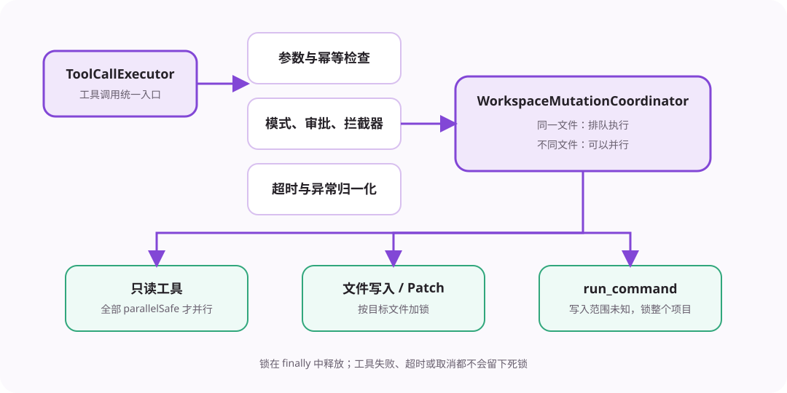

ToolCallExecutor 是模型请求进入本地能力的唯一执行入口。它保证每次工具调用都有合法参数、明确权限、有限时间和结构化结果。

executeBatch() 只有在工具数量大于一，并且整组工具都声明 parallelSafe=true 时才使用 Promise.all。读取文件、搜索和查看 Diff 可以并行；混入写入、命令、提问或计划工具后，整组改为串行。返回结果仍保持模型请求顺序。
“同一 Session 只有一个 Turn”不能阻止两个 Session 同时修改同一个项目。WorkspaceMutationCoordinator 按规范化工作区路径在不同 AgentCore 实例之间共享锁。
write_file 锁目标文件。apply_patch 一次锁补丁涉及的全部文件。run_command 无法预知修改范围，因此锁整个工作区。冲突请求排队，不冲突的文件仍可同时写入。锁在 finally 中释放，失败、超时和取消都不会留下永久锁。
每个 ToolDefinition 可以声明超时时间。超时会触发子 AbortController，并返回 timeout ToolResult。工具直接抛出的异常会转成 tool_exception。异常不会越过执行器破坏 assistant/tool 配对。
工具结果超过上下文阈值时，ToolArtifactStore 把完整 JSON 写入 Session 的 Artifact 目录，模型只收到摘要和引用。后续可用 read_artifact 分段读取。分支也能读取分叉前已经存在的 Artifact。
成功修改后，ChangeManager 保存修改前后内容，建立 ChangeSet 和 Checkpoint。撤销会恢复修改前内容；恢复检查点前先比较当前文件哈希，若用户后来手动修改过文件，则拒绝覆盖。
能安全并行的只读工具并行；已知文件按路径加锁；未知写入范围锁整个工作区；所有失败都转成模型能理解的 ToolResult。